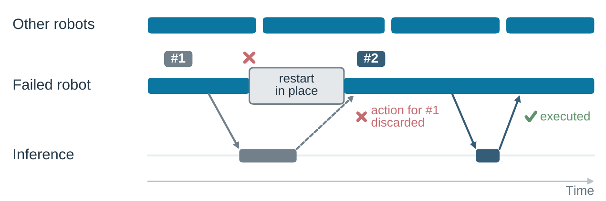

Learning from Fleet Experience: A Collective Learning Paradigm for Robots


Tsinghua University · AgiBot · Infinigence AI
Video placeholder
01
CEL: learning from a fleet’s own experience
A robot needs practice to perform a task reliably. Robot foundation models can continue improving during deployment by learning from real-world execution. A substantial body of evidence has already demonstrated the effectiveness of scaling data and compute, and robot fleets can expand their experience through parallel execution. The core bottleneck in scaling this learning process is that expert action supervision is limited and difficult to scale.
We introduce Collective Experience Learning (CEL), a paradigm for scalable policy improvement during deployment in which robots learn from experience generated across a fleet. After expert-supervised initialization, robots contribute execution experience to a shared learning process and receive updated policies while the fleet continues operating. CEL uses this collective experience to improve policy performance without additional expert demonstrations or corrective actions. Humans provide outcome labels and reset environments.
- Largest training fleet
- 96robots
- Separately trained tasks
- 5real-world tasks
- Phone Packaging
- 98.3% success
02
From folding a T-shirt to packing a phone
We used five tasks to test how learning from shared experience helps robots handle flexible objects, control contact and use tools. Each task has its own policy, trained on dual-arm AgiBot G2 robots.
Phone Packaging
The robot packs a manual, charging cable, charger, phone case and phone, then aligns and closes the lid. The sequence takes roughly two to three minutes, and each placement matters: an item left in the wrong position can make a later step harder.
98.3% success rate118 successful trials out of 12096 training robots
03
FERT: using failures to find what worked
As robots carry out tasks, CEL gathers a growing pool of experience across the fleet. However, using that experience efficiently remains a challenge: training needs examples that address the robots’ current difficulties. We developed Failure-guided Experience Retrieval Fine-Tuning (FERT) to organize fleet-generated experience for retrieval and policy fine-tuning. Successful trajectories enter a shared experience buffer. Observations preceding a failure serve as queries to find similar successful segments, matching visual features and joint state over time. The actions in these segments supply the training targets, and the segments are sampled more often during fine-tuning. A success recorded by one robot can therefore help others learn from situations where they struggled.
Learn the task
Human demonstrations teach the pretrained policy how to perform the task.
SFT
Refine with corrections
Human operators take over during multi-robot practice and demonstrate corrective actions.
(M)HG-DAgger
Improve through practice
The fleet learns from its successes, using failures to guide what to revisit.
FERT
Robots execute the policy independently. Each completed trajectory receives a binary task-outcome label. The interactive example follows four illustrative trajectories.
Successful trajectories enter a rolling collective experience buffer. Failure contexts provide queries for retrieval. Robots contribute at different rates while policy optimization continues.
A frozen copy of the policy’s vision tower encodes camera views. Spatial pooling reduces each view’s 16 × 16 visual-token grid to 4 × 4.
Visual features and joint state are normalized separately, then concatenated into a retrieval representation. Successful-trajectory embeddings are cached as experience arrives.
A query contains up to 90 frames of observations, ending 10 frames before the failed episode’s recorded endpoint.
Slope-constrained subsequence dynamic time warping aligns this query with each successful trajectory. FERT retrieves up to 10 candidates and expands each interval by 30 frames on either side.
Retrieved successful intervals increase the sampling weight of overlapping action chunks. Training samples successful actions using these weights, then returns the fine-tuned policy to the fleet.
Pink bars show chunks overlapping retrieved intervals.

04
FATS: Learning together without waiting for everyone
Collective experience learning turns a robot fleet into a distributed training system. Keeping that system stable is a challenge: robots may go offline, edge nodes may lose their connections, and some robots may pause for resets or recovery. To keep these local interruptions from holding up the whole learning process, we developed the Fault-tolerant Asynchronous Training System (FATS). Asynchronous collection and fault recovery allow available robots to continue contributing experience while recovered workers rejoin the fleet, helping collective learning continue through interruptions.

SwarmLink: connecting robots and training
With many robots operating at once, camera views, recorded trajectories and policy updates generate substantial network traffic. Congestion can leave robots waiting for actions and delay the experience and updates needed for learning. We introduced SwarmLink to coordinate these flows. It connects robots to nearby inference workers through a shared queue. Available workers batch incoming camera views and joint states, then return actions to the corresponding robots. Completed episodes enter local queues and upload in the background using the bandwidth left by policy updates. Robots start new episodes as cloud training draws on the experience that has arrived. Each updated policy crosses the edge–cloud link once, then edge relays forward it to the inference workers. Inference continues with the previous policy until the full update is ready.
Interaction
Within the edge- RobotObservation
- EdgeShared request queue
- EdgeAvailable inference worker
- Sending robotAction chunk
Experience
Edge → cloud- RobotCompleted episode
- EdgeLocal episode queue
- Edge–cloud linkBackground upload
- CloudTraining batch
Policy updates
Cloud → edge- CloudNew policy version
- Edge–cloud linkOne policy copy
- EdgeRelays forward the update
- All inference workersInstall the complete version
HotSwarm: a robot hot-plugging system
To keep training data consistent through interruptions, HotSwarm gives each restarted worker a new identity. When a robot’s control process fails, it restarts the process at the same workstation and rebuilds its connections. The other robots keep collecting. The incomplete episode is discarded, and the replacement rejects late actions addressed to its predecessor. Inference workers reload the current policy, and training workers resume from a saved checkpoint. Robots continue using their installed policy during training recovery, queuing new experience until training resumes. Operators handle scene resets and hardware repairs.

Network topology
We ran FATS with 96 robots, connecting local inference to cloud training through a dedicated 30 Gbps link. During collection, 95.18% of observation-channel operations finished within 20 ms, and approximately 97.6% of action-channel operations finished within 250 ms. More than 99% of completed episodes uploaded within two minutes, while robots continued collecting new data. The run also included faults on 22 robots, covering hardware problems, compute and network failures, and startup issues. Other robots kept collecting while operators attended to affected stations, marked task outcomes and reset scenes.
Edge and cloud workers
Robot interaction and inference use edge resources. Training workers optimize the policy in the cloud.
- Edge nodes
- 50NVIDIA RTX 4090
- Robot capacity
- 10096 used in the largest training fleet
- Cloud GPUs
- 48NVIDIA A800 · 6 servers
- Edge–cloud link
- 30Gbps · dedicated connection
05
Experiments
We evaluated FERT on five real-world manipulation tasks: flower arrangement, clothes folding, phone charging, stool assembly and phone packaging. FERT outperformed all baselines and human operators across all five tasks. The largest gain comes in phone charging, where success rises from 60.0% to 97.5%. Across all five separately trained task policies, FERT raises mean success from 81.0% after human demonstrations and corrections to 97.3%, a gain of 16.3 percentage points. We tested each policy on two AgiBot G2 robots that had not collected training data, with 60 trials per robot and no human intervention. The charts below show success rates over these 120 trials per task, with 95% Wilson confidence intervals.
Explore the task-by-task results
Success by method
| Task | Human | SFT | (M)HG-DAgger | RLT | RECAP | FERT |
|---|
What changes when more robots contribute?
To see how performance changes as more robots contribute, we varied fleet size while keeping collection time per robot fixed. Across the five tasks, FERT generally improves with larger fleets. On phone packaging, success reaches 50.8%, 86.7% and 98.3% with 4, 16 and 96 training robots, respectively. The 4-robot result falls below the starting policy’s 79.2%, while expanding from 16 to 96 robots adds 11.7 percentage points. By collecting autonomous experience with solely binary task-outcome labels, FERT provides a practical route to expanding the experience available for policy improvement. Dashed lines mark the SFT and (M)HG-DAgger starting policies.
Explore results at each fleet size
| Method | Successful trials | 95% Wilson interval |
|---|
Ablation study: What makes the learning loop work?
To understand how each part of the learning loop contributes, we ran an ablation study on phone packaging, testing four design choices with 16 training robots and 120 evaluation trials per configuration. The full configuration reaches 86.7% success. Removing the 30 frames of context on either side of each retrieved segment, while keeping retrieval, lowers it to 57.5%. Both choosing relevant examples and keeping the surrounding movements matter for learning the sequence. We also varied how often robots receive updated policies and how much previous sampling priority carries forward. Among the settings we tested, synchronizing every 500 optimizer steps and retaining 88% of previous priorities each gave the highest success rate.
06
Conclusion
We introduce Collective Experience Learning (CEL), a paradigm in which robots improve a shared policy during deployment using fleet-generated experience after expert-supervised initialization. We realize CEL through Failure-guided Experience Retrieval Fine-Tuning (FERT), which uses successful executions as action supervision and failures to select relevant successful experience. A Fault-tolerant Asynchronous Training System (FATS) supports this learning process by coordinating experience collection, optimization and policy distribution across the fleet despite interruptions to individual robots. Together, these components enable the fleet to supply experience for subsequent policy updates without additional expert demonstrations or corrective actions. Across five real-world manipulation tasks, the resulting policies achieved 93.3–99.2% success on robots excluded from training data collection.